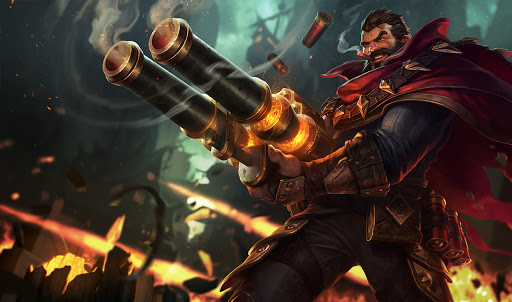

tu devrais essayer Graves

graves est un tirreur ayant la spécificité de ne pas se jouer sur la voie du bas mais en jungle, il possède une portée trop faible pour être efficace contre des tireurs plus traditionnels, cependant il à la capacité d'infliger de puissants coup de fusil à pompe a courte portée